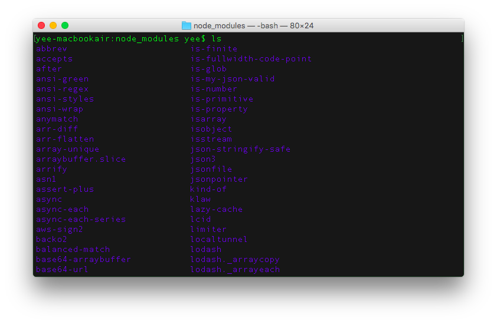
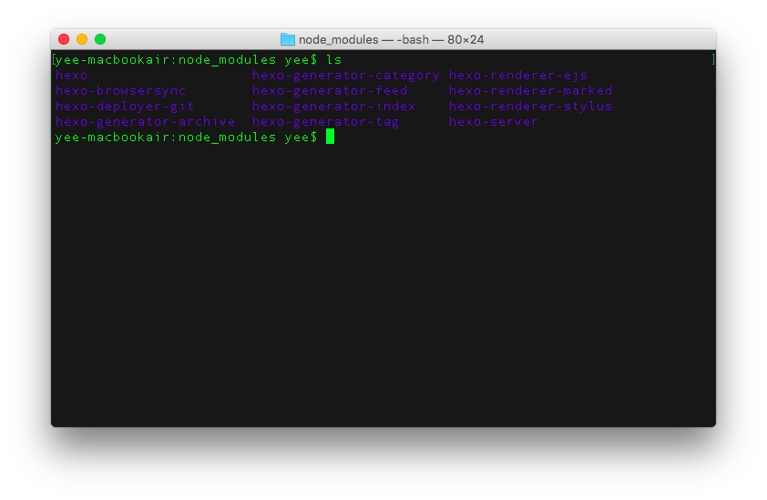

如何将npm包的依赖包安装在自己的npm_modules目录？
编程洁癖癌晚期患者，绝不允许不按自己的方式生成目录!
So，当我在给这个博客安装hexo-browsersync插件时，如果我用命令行1
npm install hexo-browsersync --save
虽然会在此hexo博客路径的npm_modules目录安装hexo-browsersync包，但由于hexo-browsersync的包依赖关系，同时也会在此目录下安装hexo-browsersync的所有依赖包。这样的结果就是——即使package.json文件中只有几个hexo-前缀的依赖包，但npm_modules下却装了一堆它们各自依赖的包，既没有体现包与包的依赖关系，也看不出来自己到底安装了哪些包。当然最重要的还是……看着一堆文件目录就让人抓狂手欠😢😢😢

也许是关键字没用对，或者洁癖者太少，昨天Google了很久都没有找到答案，最后还是读npm help install自己解决的。
Q：如何在安装npm项目的依赖包时，将该包所依赖的其他包都安装在该包自己的npm_modules目录，而不是项目的npm_modules？
A：在命令后加上-global-style参数，即可安装在各自的模块目录下了。
1 | npm install hexo-browsersync -global-style --save |
